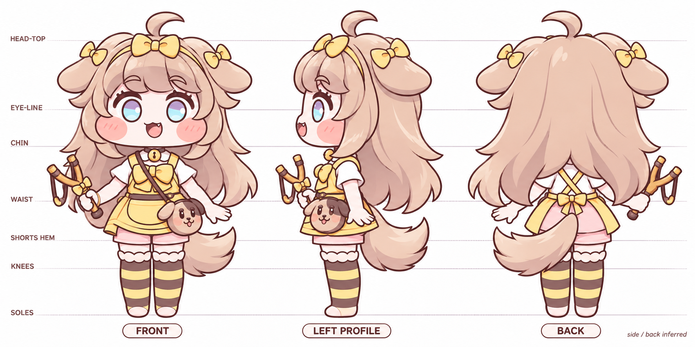

기준이 된 승인 2D 보기

버터 · 자료 정합 / 외형 검토 31
승인한 2D를 바탕으로 방향별 모습과 복장 구조를 정리하고, 같은 기준점에 맞춰 만든 3D 시안이야. 도안과 모델을 겹쳐 보고 직접 돌려볼 수 있어.

흰 반팔 위 노란 앞치마, 뒤에서 보이는 분홍 반바지, 골반 중앙의 꼬리, 오른손 새총을 공통 조건으로 정리했어. 정합 기준과 추정 내역
3D 모델을 불러오는 중…
기준 자료에 맞춘 첫 외형 모델이야. 표정·머리카락 세부 조형은 더 다듬을 여지가 있어. 새 걷기·사격 동작은 아직 없고, 기존 게임에는 적용하지 않았어.
Blender 원본GLB 모델방향별 시트비율·색·구조 기준게임